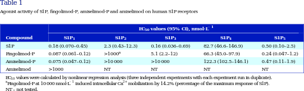

|

corpus-oa-validation/10.1111_bph.13641/tables/table1/table.svg.png
|
| S1P Fingolimod-P Amiselimod-P Amiselimod |
0.18 (0.070–0.45) 0.087 (0.061–0.12) 0.075 (0.047–0.12) >1000 |
2.3 (0.43–12.3) >1000 ^{a} >10 000 NT |
0.16 (0.036–0.69) 5.1 (2.2–12) >10 000 NT |
82.7 (46.6–146.9) 66.3 (45.0–97.9) 122.3 (102.5–146.1) NT |
0.50 (0.10–2.5) 0.24 (0.047–1.2) 0.47 (0.11–1.9) NT |
| EC _{50} |
values were calculated by nonlinear regression analysis (three independent experiments with each experiment run in duplicate). |
|
-1 |
| ^{a Fingolimod-P at 10 000 nmol·L} |
2+ |
| NT –not tested. |
induced intracellular Ca |
corpus-oa-validation/10.1111_bph.13641/tables/table1/table.svg.html
|